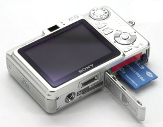

Brancher son appareil ou sa carte mémoire à l'ordinateur
Brancher son appareil photo
Afin de brancher votre appareil photo, il vous faudra pour la plupart des appareils photo numérique utiliser câble USB<=>miniUSB.
Si vous n'avez pas le câble fourni avec votre appareil ou si votre appareil n'est pas reconnu par votre ordinateur après l'avoir branché, il vous faudra éjecter la carte mémoire (voir ci-dessous).
Utiliser la carte mémoire

Il est parfois plus pratique d'éjecter la carte mémoire de l'appareil et de l'insérer dans l'ordinateur, cela évite d'avoir l'appareil branché avec le câble qui peut encombrer votre espace de travail.
Pour cela il vous faut un lecteur de carte compatible sur votre ordinateur, si ce n'est pas le cas vous pouvez trouver à des prix raisonnables des adaptateurs amovibles (image ci-contre).